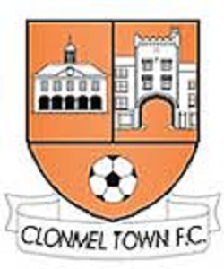

Sport
G.A.A
I am an avid member of Gaelic games in my community, playing for my local parish club Moyle Rovers i have endured great success winning 4 county titles and 9 south titles since joining. However GAA means a great deal more too me than just playing a game. I have forged lifelong bonds as a result of comradery during grueling trainings and sickening defeats.
GAA has clearly impacted my ability in the workplace as i have learned to work well with others, have pride in my work and communicate efficently. There is also the relaxation aspect too consider, GAA provides a release from the stress of work leaving you clear minded after a gruelling session.
Soccer
Coming from Tipperary its no surprise that soccer is viewed as somewhat sub-par to GAA. However, I also enjoyed a brief stint of success playing for Clonmel Town F.C. Getting to an all Ireland final which left us just a win away from travelling to Warsaw ,Poland was definitely the highlight of my soccer career. I thoroughly enjoyed my time playing soccer and it taught me plentiful lessons in patience and Respect.
Soccer can also be applied too the workspace however, the discipline, consistency and accuracy are all common found in the office. This has left me enternailly grateful for the Time i spent learning this skill.
Basketball
Basketball is definitely no religion in tipperary like other sports but, it is no less competitive and fierce nonetheless. Basketball has taught me many life skills such as endurance, focus and leadership. Basketball requires constant motivation and communication which as everyone knows is easily transpired too the workplace
Basketball is often mischaracterised as a less than physical sport as some others, But the opposite is true the hard floor making every fall seem like concrete, the swinging elbows unseen in other sports and the high flying bodies of tall athletes make basketball an extremely admirable sport and one i am proud too play
Back To Index
Back to Interests